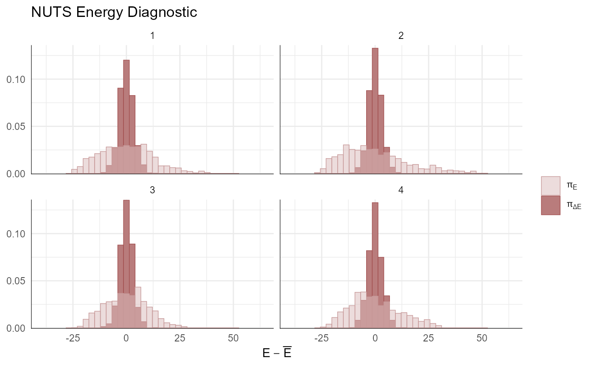

Differences between TMB and RTMB
adnuts implements the sparse no-u-turn sampler (SNUTS)
as introduced and detailed in [@monnahan2025]. This only works for TMB models
because Stan currently has no way to pass and use a sparse metric. Both
TMB and RTMB can be used in parallel. The sample_snuts
function will detect which is used internally and adjust accordingly. If
the RTMB model uses external functions or data sets then they must be
passed through via a list in the globals argument so they
are available to rebuild the ‘obj’ in the parallel R sessions.
Optionally, the model_name can be specified in the call,
otherwise your model will be labeled “RTMB” in the output. TMB models do
not require a globals input and the model name is pulled from the DLL
name, but can be overridden if desired.
SNUTS for TMB models from existing packages (sdmTMB, glmmTMB, etc.)
adnuts works for custom TMB and RTMB models developed
locally, but also for those that come in packages. Most packages will
return the TMB ‘obj’ which can then be passed into
sample_snuts.
For instance the glmmTMB package can be run like
this:
Basic usage
The recommended usage for TMB users is to let the
sample_snuts function automatically detect the metric to
use and the length of warmup, especially for pilot runs during model
development.
I demonstrate basic usage using a very simple RTMB version of the eight schools model that has been examined extensively in the Bayesian literature. The first step is to build the TMB object ‘obj’ that incorporates priors and Jacobians for parameter transformations. Note that the R function returns the negative un-normalized log-posterior density.
library(RTMB)
dat <- list(y=c(28, 8, -3, 7, -1, 1, 18, 12),
sigma=c(15, 10, 16, 11, 9, 11, 10, 18))
pars <- list(mu=0, logtau=0, eta=rep(1,8))
f <- function(pars){
getAll(dat, pars)
theta <- mu + exp(logtau) * eta;
lp <- sum(dnorm(eta, 0,1, log=TRUE))+ # prior
sum(dnorm(y,theta,sigma,log=TRUE))+ #likelihood
logtau # jacobian
REPORT(theta)
return(-lp)
}
obj <- MakeADFun(func=f, parameters=pars,
random="eta", silent=TRUE)Posterior sampling with SNUTS
The most common task is to draw samples from the posterior density
defined by this model. This is done with the sample_snuts
function as follows:
fit <- sample_snuts(obj, refresh=0, seed=1,
model_name = 'schools',
cores=1, chains=1,
globals=list(dat=dat))
#> Optimizing...
#> Getting Q...
#> Inverting Q...
#> Q is 62.22% zeroes, with condition factor=56 (min=0.044, max=2.5)
#> Rebuilding RTMB obj without random effects...
#> diag metric selected b/c of low correlations
#> log-posterior at inits=-34.661; at conditional mode=-34.661
#> Starting MCMC sampling...
#>
#>
#> Gradient evaluation took 0.000113 seconds
#> 1000 transitions using 10 leapfrog steps per transition would take 1.13 seconds.
#> Adjust your expectations accordingly!
#>
#>
#>
#> Elapsed Time: 0.062 seconds (Warm-up)
#> 0.377 seconds (Sampling)
#> 0.439 seconds (Total)
#> 5 of 1150 (0.43%) iterations ended with a divergence.
#> These divergent transitions indicate that HMC is not fully able to explore the posterior distribution.
#> Try increasing adapt_delta closer to 1.
#> If this doesn't remove all divergences, try to reparameterize the model.
#> Loading required package: microbenchmark
#>
#>
#> Model 'schools' has 10 pars, and was fit using NUTS with a 'diag' metric
#> 1 chain(s) of 1150 total iterations (150 warmup) were used
#> Average run time per chain was 0.44 seconds
#> Minimum ESS=296.92 (29.69%), and maximum Rhat=1.002
#> There were 0 divergences after warmupThe returned object fit (an object of ‘adfit’ S3 class)
contains the posterior samples and other relevant information for a
Bayesian analysis.
Notice that no optimization was done before calling
sample_snuts. When the model has already been optimized,
you can skip that by setting skip_optimization=TRUE, and
even pass in
and
via arguments Q and Qinv to bypass this step
and save some run time. The returned fitted object contains a slot
called mle which has the conditional mode (‘est’), the
marginal standard errors ‘se’, and a joint correlation matrix
(‘cor’).
str(fit$mle)
#> List of 5
#> $ nopar: int 10
#> $ est : Named num [1:10] 7.92441 1.8414 0.47811 0.00341 -0.2329 ...
#> ..- attr(*, "names")= chr [1:10] "mu" "logtau" "eta[1]" "eta[2]" ...
#> $ se : Named num [1:10] 4.725 0.732 0.959 0.872 0.945 ...
#> ..- attr(*, "names")= chr [1:10] "mu" "logtau" "eta[1]" "eta[2]" ...
#> $ cor : num [1:10, 1:10] 1 0.0558 -0.1031 -0.2443 -0.114 ...
#> ..- attr(*, "dimnames")=List of 2
#> .. ..$ : chr [1:10] "mu" "logtau" "eta[1]" "eta[2]" ...
#> .. ..$ : chr [1:10] "mu" "logtau" "eta[1]" "eta[2]" ...
#> $ Q :Formal class 'dsCMatrix' [package "Matrix"] with 7 slots
#> .. ..@ i : int [1:27] 0 1 2 3 4 5 6 7 8 9 ...
#> .. ..@ p : int [1:11] 0 10 19 20 21 22 23 24 25 26 ...
#> .. ..@ Dim : int [1:2] 10 10
#> .. ..@ Dimnames:List of 2
#> .. .. ..$ : chr [1:10] "mu" "logtau" "eta[1]" "eta[2]" ...
#> .. .. ..$ : chr [1:10] "mu" "logtau" "eta[1]" "eta[2]" ...
#> .. ..@ x : num [1:27] 0.0603 -0.0144 0.028 0.0631 0.0246 ...
#> .. ..@ uplo : chr "L"
#> .. ..@ factors :List of 1
#> .. .. ..$ SPdCholesky:Formal class 'dCHMsuper' [package "Matrix"] with 10 slots
#> .. .. .. .. ..@ x : num [1:100] 1.06 0 0 0 0 ...
#> .. .. .. .. ..@ super : int [1:2] 0 10
#> .. .. .. .. ..@ pi : int [1:2] 0 10
#> .. .. .. .. ..@ px : int [1:2] 0 100
#> .. .. .. .. ..@ s : int [1:10] 0 1 2 3 4 5 6 7 8 9
#> .. .. .. .. ..@ type : int [1:6] 2 1 1 1 1 1
#> .. .. .. .. ..@ colcount: int [1:10] 3 3 3 3 3 3 4 3 2 1
#> .. .. .. .. ..@ perm : int [1:10] 9 8 7 6 5 4 0 2 3 1
#> .. .. .. .. ..@ Dim : int [1:2] 10 10
#> .. .. .. .. ..@ Dimnames:List of 2
#> .. .. .. .. .. ..$ : chr [1:10] "mu" "logtau" "eta[1]" "eta[2]" ...
#> .. .. .. .. .. ..$ : chr [1:10] "mu" "logtau" "eta[1]" "eta[2]" ...Diagnostics
The common MCMC diagnostics potential scale reduction (Rhat) and
minimum ESS, as well as the NUTS divergences (see diagnostics
section of the rstan manual), are printed to console by default or
can be accessed in more depth via the monitor slot:
print(fit)
#> Model 'schools' has 10 pars, and was fit using NUTS with a 'diag' metric
#> 1 chain(s) of 1150 total iterations (150 warmup) were used
#> Average run time per chain was 0.44 seconds
#> Minimum ESS=296.92 (29.69%), and maximum Rhat=1.002
#> There were 0 divergences after warmup
fit$monitor |> str()
#> drws_smm [11 × 12] (S3: draws_summary/tbl_df/tbl/data.frame)
#> $ variable: chr [1:11] "mu" "logtau" "eta[1]" "eta[2]" ...
#> $ mean : num [1:11] 1.715 1.992 0.425 -0.019 -0.218 ...
#> $ median : num [1:11] 1.6549 2.2596 0.4623 -0.0369 -0.2074 ...
#> $ sd : num [1:11] 1.008 1.496 1.031 1.015 0.973 ...
#> $ mad : num [1:11] 0.95 1.215 1.001 0.956 0.946 ...
#> $ q5 : num [1:11] 0.096 -0.729 -1.349 -1.74 -1.809 ...
#> $ q95 : num [1:11] 3.43 3.82 2.06 1.64 1.46 ...
#> $ rhat : num [1:11] 1.001 0.999 1 1 1.002 ...
#> $ ess_bulk: num [1:11] 833 324 1535 1498 1545 ...
#> $ ess_tail: num [1:11] 498 288 893 717 828 ...
#> $ n_eff : num [1:11] 833 324 1535 1498 1545 ...
#> $ Rhat : num [1:11] 1.001 0.999 1 1 1.002 ...
#> - attr(*, "num_args")= list()A specialized pairs plotting function is available
(formally called pairs_admb) to examine pair-wise behavior
of the posteriors. This can be useful to help diagnose particularly slow
mixing parameters. This function also displays the conditional mode
(point) and 95% bivariate confidence region (ellipses) as calculated
from the approximate covariance matrix
.
The parameters to show can be specified either vie a character vector
like pars=c('mu', 'logtau', 'eta[1]') or an integer vector
like pars=1:3, and when using the latter the parameters can
be ordered by slowest mixing (‘slow’), fastest mixing (‘fast’) or by the
largest discrepancies in the approximate marginal variance from
and the posterior samples (‘mismatch’). NUTS divergences are shown as
green points. See help and further information at
?pairs.adfit.
pairs(fit, order='slow')In some cases it is useful to diagnose the NUTS behavior by examining the “sampler parameters”, which contain information about the individual NUTS trajectories.
extract_sampler_params(fit) |> str()
#> 'data.frame': 1000 obs. of 8 variables:
#> $ chain : num 1 1 1 1 1 1 1 1 1 1 ...
#> $ iteration : num 151 152 153 154 155 156 157 158 159 160 ...
#> $ accept_stat__: num 0.988 0.973 0.99 0.929 0.842 ...
#> $ stepsize__ : num 0.536 0.536 0.536 0.536 0.536 ...
#> $ treedepth__ : num 3 3 3 3 3 3 3 3 3 3 ...
#> $ n_leapfrog__ : num 7 7 7 7 7 7 7 7 7 7 ...
#> $ divergent__ : num 0 0 0 0 0 0 0 0 0 0 ...
#> $ energy__ : num 46.1 45.2 42.3 39.8 39.7 ...
## or plot them directly
plot_sampler_params(fit)The ShinyStan tool is also available and provides a convenient,
interactive way to check diagnostics via the function
launch_shinytmb(obj), but also explore estimates and other
important quantities. This is a key tool for a workflow with
‘adnuts’.
Bayesian inference
After checking for signs of non-convergence the results can be used
for inference. Posterior samples for parameters can be extracted and
examined in R by casting the fitted object to an R data.frame. These
posterior samples can then be put back into the TMB object
report() function to extract any desired “generated
quantity” in Stan terminology.
post <- as.data.frame(fit)
post |> str()
#> 'data.frame': 1000 obs. of 10 variables:
#> $ mu : num 6 9.67 3.93 12.17 7.92 ...
#> $ logtau: num 0.0852 0.7415 2.0695 2.6354 2.4339 ...
#> $ eta[1]: num 0.944 -0.79 0.202 1.447 -0.473 ...
#> $ eta[2]: num 0.659 -1.061 1.001 -1.135 0.503 ...
#> $ eta[3]: num -1.162 1.08 -0.917 0.305 -1.236 ...
#> $ eta[4]: num -0.5655 0.7594 -0.3337 0.0423 -0.6287 ...
#> $ eta[5]: num 0.914 -0.855 0.315 -1.349 -0.233 ...
#> $ eta[6]: num 0.899 -1.269 -0.68 -0.231 -0.832 ...
#> $ eta[7]: num 1.5982 -0.9183 0.7886 0.0198 0.6867 ...
#> $ eta[8]: num -0.202 0.262 -0.209 0.771 -0.996 ...
## now get a generated quantity, here theta which is a vector of
## length 8 so becomes a matrix of posterior samples
theta <- apply(post,1, \(x) obj$report(x)$theta) |> t()
theta |> str()
#> num [1:1000, 1:8] 7.03 8.01 5.53 32.35 2.53 ...Likewise, marginal distributions can be explored visually and compared to the approximate estimate from the conditional mode and (red lines):
plot_marginals(fit)A more complicated example
To demonstrate more than the basic usage I will use a more complicated model. I modified the ChickWeight random slopes and intercepts example from the RTMB introduction. Modifications include: switching SD parameters to log space and adding a Jacobian, adding broad priors for these SDs, and adding a ‘loglik’ vector for PSIS-LOO (below).
parameters <- list(
mua=0, ## Mean slope
logsda=0, ## Std of slopes
mub=0, ## Mean intercept
logsdb=0, ## Std of intercepts
logsdeps=1, ## Residual Std
a=rep(0, 50), ## Random slope by chick
b=rep(0, 50) ## Random intercept by chick
)
f <- function(parms) {
require(RTMB) # for tmbstan
getAll(ChickWeight, parms, warn=FALSE)
sda <- exp(logsda)
sdb <- exp(logsdb)
sdeps <- exp(logsdeps)
## Optional (enables extra RTMB features)
weight <- OBS(weight)
predWeight <- a[Chick] * Time + b[Chick]
loglik <- dnorm(weight, predWeight, sd=sdeps, log=TRUE)
# calculate the target density
lp <- sum(loglik)+ # likelihood
# random effect vectors
sum(dnorm(a, mean=mua, sd=sda, log=TRUE)) +
sum(dnorm(b, mean=mub, sd=sdb, log=TRUE)) +
# broad half-normal priors on SD pars
dnorm(sda, 0, 10, log=TRUE) +
dnorm(sdb, 0, 10, log=TRUE) +
dnorm(sdeps, 0, 10, log=TRUE) +
# jacobian adjustments
logsda + logsdb + logsdeps
# reporting
REPORT(loglik) # for PSIS-LOO
ADREPORT(predWeight) # delta method
REPORT(predWeight) # standard report
return(-lp) # negative log-posterior density
}
obj <- MakeADFun(f, parameters, random=c("a", "b"), silent=TRUE)Asymptotic (frequentist) approximatation vs full posterior
Instead of sampling from the posterior with MCMC (SNUTS), I can use asymptotic tools from TMB to get a quick approximation of the parameters, their covariances, but also uncertainties of generated quantities via the generalized delta method. See the TMB documentation for more background. Briefly, the marginal posterior mode is found and a joint precision matrix determined at the conditional mode. is the covariance of the parameters.
First I optimize the model and call TMB’s sdreport
function to get approximate uncertainties via the delta method and the
joint precision matrix
.
# optimize
opt <- with(obj, nlminb(par, fn, gr))
# get generalized delta method results and Q
sdrep <- sdreport(obj, getJointPrecision=TRUE)
# get the generalized delta method estimates of asymptotic
# standard errors
est <-as.list(sdrep, 'Estimate', report=TRUE)$predWeight
se <- as.list(sdrep, 'Std. Error', report=TRUE)$predWeight
Q <- sdrep$jointPrecision
# can get the joint covariance and correlation like this
Sigma <- as.matrix(solve(Q))
cor <- cov2cor(Sigma)
plot_Q(Q=Q)Now I run SNUTS on it and get posterior samples to compare to.
# some very strong negative correlations so I expect a dense or
# sparse metric to be selected with SNUTS. Because I optimized
# above can skip that
mcmc <- sample_snuts(obj, chains=1, init='random', seed=1234,
refresh=0, skip_optimization=TRUE,
Q=Q, Qinv=Sigma)
#> Q is 91.85% zeroes, with condition factor=74028 (min=0.014, max=1018.9)
#> Rebuilding RTMB obj without random effects...
#> dense metric selected b/c faster than sparse and high correlation (0.81)
#> log-posterior at inits=-2627.037; at conditional mode=-2574.481
#> Starting MCMC sampling...
#>
#>
#> Gradient evaluation took 0.000121 seconds
#> 1000 transitions using 10 leapfrog steps per transition would take 1.21 seconds.
#> Adjust your expectations accordingly!
#>
#>
#>
#> Elapsed Time: 0.225 seconds (Warm-up)
#> 1.122 seconds (Sampling)
#> 1.347 seconds (Total)
#> 1 of 1150 (0.09%) iterations ended with a divergence.
#> These divergent transitions indicate that HMC is not fully able to explore the posterior distribution.
#> Try increasing adapt_delta closer to 1.
#> If this doesn't remove all divergences, try to reparameterize the model.
#>
#>
#> Model 'RTMB' has 105 pars, and was fit using NUTS with a 'dense' metric
#> 1 chain(s) of 1150 total iterations (150 warmup) were used
#> Average run time per chain was 1.35 seconds
#> Minimum ESS=324.07 (32.41%), and maximum Rhat=1.023
#> There were 0 divergences after warmup
post <- as.data.frame(mcmc)
plot_uncertainties(mcmc)
## get posterior of generated quantities
predWeight <- apply(post,1, \(x) obj$report(x)$predWeight) |>
t()
predWeight |> str()
#> num [1:1000, 1:578] 28.1 29.3 23.5 24.8 26.7 ...
# compare asymptotic vs posterior intervals of first few chicks
par(mfrow=c(2,3))
for(ii in 1:6){
y <- predWeight[,ii]
x <- seq(min(y), max(y), len=200)
y2 <- dnorm(x,est[ii], se[ii])
hist(y, freq=FALSE, ylim=c(0,max(y2)))
lines(x, y2, col=2, lwd=2)
}
dev.off()
#> null device
#> 1Simulation of parameters and data
Simulation of data can be done directly in R. Specialized simulation functionality exists for TMB, and to a lesser degree RTMB, but I keep it simple here for demonstration purposes.
Both data and parameters can be simulated and I explore that below.
Prior and posterior predictive distributions
# simulation of data sets can be done manually in R. For instance
# to get posterior predictive I loop through each posterior
# sample and draw new data.
set.seed(351231)
simdat <- apply(post,1, \(x){
yhat <- obj$report(x)$predWeight
ysim <- rnorm(n=length(yhat), yhat, sd=exp(x['logsdeps']))
}) |> t()
boxplot(simdat[,1:24], main='Posterior predictive')
points(ChickWeight$weight[1:24], col=2, cex=2, pch=16)Prior predictive sampling would be done in the same way but is not shown here.
Joint precision sampling
Samples can be drawn from , assuming multivariate normality, as follows:
# likewise I can simulate draws from Q to get approximate samples
postQ <- mvtnorm::rmvnorm(1000, mean=mcmc$mle$est, sigma=Sigma)These samples could be put back into the report function
to get a distribution of a generated quantity, for instance.
Model selection with PSIS-LOO
PSIS-LOO is the recommended way to compare predictive performance of
Bayesian models. I use it to compare a simplified Chicks model below
using the map argument to turn off estimation of the random
intercepts (‘b’). All this requires is for the vector of log-likelihood
values to be available for each posterior draw. I facilitate this via a
REPORT(loglik) call above.
library(loo)
#> This is loo version 2.8.0
#> - Online documentation and vignettes at mc-stan.org/loo
#> - As of v2.0.0 loo defaults to 1 core but we recommend using as many as possible. Use the 'cores' argument or set options(mc.cores = NUM_CORES) for an entire session.
#> - Windows 10 users: loo may be very slow if 'mc.cores' is set in your .Rprofile file (see https://github.com/stan-dev/loo/issues/94).
options(mc.cores=parallel::detectCores())
loglik <- apply(post,1, \(x) obj$report(x)$loglik) |>
t()
loo1 <- loo(loglik, cores=4)
#> Warning: Some Pareto k diagnostic values are too high. See help('pareto-k-diagnostic') for details.
print(loo1)
#>
#> Computed from 1000 by 578 log-likelihood matrix.
#>
#> Estimate SE
#> elpd_loo -2351.8 19.9
#> p_loo 88.5 6.9
#> looic 4703.6 39.7
#> ------
#> MCSE of elpd_loo is NA.
#> MCSE and ESS estimates assume independent draws (r_eff=1).
#>
#> Pareto k diagnostic values:
#> Count Pct. Min. ESS
#> (-Inf, 0.67] (good) 572 99.0% 103
#> (0.67, 1] (bad) 6 1.0% <NA>
#> (1, Inf) (very bad) 0 0.0% <NA>
#> See help('pareto-k-diagnostic') for details.
plot(loo1)
# I can compare that to a simpler model which doesn't have
# random effects on the slope
obj2 <- MakeADFun(f, parameters, random=c("a"), silent=TRUE,
map=list(b=factor(rep(NA, length(parameters$b))),
logsdb=factor(NA),
mub=factor(NA)))
mcmc2 <- sample_snuts(obj2, chains=1, seed=1215, refresh=0)
#> Optimizing...
#> Getting Q...
#> Inverting Q...
#> Q is 88.9% zeroes, with condition factor=8423 (min=0.128, max=1080.5)
#> Rebuilding RTMB obj without random effects...
#> diag metric selected b/c of low correlations
#> log-posterior at inits=-2745.519; at conditional mode=-2745.519
#> Starting MCMC sampling...
#>
#>
#> Gradient evaluation took 7.9e-05 seconds
#> 1000 transitions using 10 leapfrog steps per transition would take 0.79 seconds.
#> Adjust your expectations accordingly!
#>
#>
#>
#> Elapsed Time: 0.118 seconds (Warm-up)
#> 0.694 seconds (Sampling)
#> 0.812 seconds (Total)
#> 1 of 1150 (0.09%) iterations ended with a divergence.
#> These divergent transitions indicate that HMC is not fully able to explore the posterior distribution.
#> Try increasing adapt_delta closer to 1.
#> If this doesn't remove all divergences, try to reparameterize the model.
#>
#>
#> Model 'RTMB' has 53 pars, and was fit using NUTS with a 'diag' metric
#> 1 chain(s) of 1150 total iterations (150 warmup) were used
#> Average run time per chain was 0.81 seconds
#> Minimum ESS=402.16 (40.22%), and maximum Rhat=1.007
#> There were 0 divergences after warmup
post2 <- as.data.frame(mcmc2)
loglik2 <- apply(post2,1, \(x) obj2$report(x)$loglik) |>
t()
loo2 <- loo(loglik2, cores=4)
#> Warning: Some Pareto k diagnostic values are too high. See help('pareto-k-diagnostic') for details.
print(loo2)
#>
#> Computed from 1000 by 578 log-likelihood matrix.
#>
#> Estimate SE
#> elpd_loo -2613.1 14.4
#> p_loo 31.8 3.0
#> looic 5226.2 28.9
#> ------
#> MCSE of elpd_loo is NA.
#> MCSE and ESS estimates assume independent draws (r_eff=1).
#>
#> Pareto k diagnostic values:
#> Count Pct. Min. ESS
#> (-Inf, 0.67] (good) 577 99.8% 195
#> (0.67, 1] (bad) 1 0.2% <NA>
#> (1, Inf) (very bad) 0 0.0% <NA>
#> See help('pareto-k-diagnostic') for details.
loo_compare(loo1, loo2)
#> elpd_diff se_diff
#> model1 0.0 0.0
#> model2 -261.3 19.3Advanced features
Adaptation of Stan diagonal mass matrix
When the estimate of
does not well approximate the posterior surface, then it may be
advantageous to adapt a diagonal mass matrix to account for changes in
scale. This can be controlled via the adapt_stan_metric
argument. This argument is automatically set to FALSE when using a
metric other than ‘stan’ and ‘unit’ since all other metrics in theory
already descale the posterior. This can be overridden by setting it
equal to TRUE
Here I run three versions of the model and compare the NUTS stepsize. The model version without adaptation uses a shorter warmup period
adapted1 <- sample_snuts(obj, chains=1, seed=1234, refresh=0,
skip_optimization=TRUE, Q=Q, Qinv=Sigma,
metric='auto', adapt_stan_metric = TRUE)
#> Q is 91.85% zeroes, with condition factor=74028 (min=0.014, max=1018.9)
#> Rebuilding RTMB obj without random effects...
#> dense metric selected b/c faster than sparse and high correlation (0.81)
#> log-posterior at inits=-2574.481; at conditional mode=-2574.481
#> Starting MCMC sampling...
#>
#>
#> Gradient evaluation took 0.000117 seconds
#> 1000 transitions using 10 leapfrog steps per transition would take 1.17 seconds.
#> Adjust your expectations accordingly!
#>
#>
#>
#> Elapsed Time: 1.631 seconds (Warm-up)
#> 1.967 seconds (Sampling)
#> 3.598 seconds (Total)
#> 5 of 2000 (0.25%) iterations ended with a divergence.
#> These divergent transitions indicate that HMC is not fully able to explore the posterior distribution.
#> Try increasing adapt_delta closer to 1.
#> If this doesn't remove all divergences, try to reparameterize the model.
#>
#>
#> Model 'RTMB' has 105 pars, and was fit using NUTS with a 'dense' metric
#> 1 chain(s) of 2000 total iterations (1000 warmup) were used
#> Average run time per chain was 3.6 seconds
#> Minimum ESS=661.27 (66.13%), and maximum Rhat=1.008
#> There were 0 divergences after warmup
adapted2 <- sample_snuts(obj, chains=1, seed=1234, refresh=0,
skip_optimization=TRUE, Q=Q, Qinv=Sigma,
metric='stan', adapt_stan_metric = TRUE)
#> Rebuilding RTMB obj without random effects...
#> log-posterior at inits=-2574.399
#> Starting MCMC sampling...
#>
#>
#> Gradient evaluation took 6.8e-05 seconds
#> 1000 transitions using 10 leapfrog steps per transition would take 0.68 seconds.
#> Adjust your expectations accordingly!
#>
#>
#>
#> Elapsed Time: 7.68 seconds (Warm-up)
#> 2.872 seconds (Sampling)
#> 10.552 seconds (Total)
#> 23 of 2000 (1.15%) iterations ended with a divergence.
#> These divergent transitions indicate that HMC is not fully able to explore the posterior distribution.
#> Try increasing adapt_delta closer to 1.
#> If this doesn't remove all divergences, try to reparameterize the model.
#>
#>
#> Model 'RTMB' has 105 pars, and was fit using NUTS with a 'stan' metric
#> 1 chain(s) of 2000 total iterations (1000 warmup) were used
#> Average run time per chain was 10.55 seconds
#> Minimum ESS=580.82 (58.08%), and maximum Rhat=1.007
#> There were 0 divergences after warmup
sp1 <- extract_sampler_params(mcmc, inc_warmup = TRUE) |>
subset(iteration <= 1050) |>
cbind(type='descaled + not adapted')
sp2 <- extract_sampler_params(adapted1, inc_warmup = TRUE) |>
subset(iteration <= 1050) |>
cbind(type='descaled + adapted')
sp3 <- extract_sampler_params(adapted2, inc_warmup = TRUE) |>
subset(iteration <= 1050) |>
cbind(type='adapted')
sp <- rbind(sp1, sp2, sp3)
ggplot(sp, aes(x=iteration, y=stepsize__, color=type)) + geom_line() +
scale_y_log10() + theme_bw() + theme(legend.position = 'top') +
labs(color=NULL, x='warmup')It is apparent that during the first warmup phase the model with Stan defaults (‘adapted’ in the above plot) has a large adjustment in stepsize and this corresponds to very long trajectory lengths and thus increased computational time. If descaled using the adaptation does nothing (‘descaled + adapted’), which is why such a short warmup period can be used with SNUTS (‘descaled + not adapted’) in this case, and often which is why the default warmup is short and adaptation disabled for SNUTS.
In other cases a longer warmup and mass matrix adaptation will make a difference, see for example the ‘wildf’ model in @monnahan2025.
Embedded Laplace approximation SNUTS
This approach uses NUTS (or SNUTS) to sample from the marginal posterior using the Laplace approximation to integrate the random effects. This was first explored in @monnahan2018 and later in more detail in @margossian2020 who called it the ‘embedded Laplace approximation’. @monnahan2025 applied this to a much larger set of models and found mixed results.
It is trivial to try in SNUTS by simply declaring
laplace=TRUE.
ela <- sample_snuts(obj, chains=1, laplace=TRUE, refresh=0)
#> Optimizing...
#> Getting M for fixed effects...
#> Qinv is 0% zeroes, with condition factor=3107 (min=0.001, max=3.3)
#> diag metric selected b/c low correlations
#> log-posterior at inits=-2451.942; at conditional mode=-17038.961
#> Starting MCMC sampling...
#>
#>
#> Gradient evaluation took 0.000769 seconds
#> 1000 transitions using 10 leapfrog steps per transition would take 7.69 seconds.
#> Adjust your expectations accordingly!
#>
#>
#>
#> Elapsed Time: 0.847 seconds (Warm-up)
#> 4.64 seconds (Sampling)
#> 5.487 seconds (Total)
#> 1 of 1150 (0.09%) iterations ended with a divergence.
#> These divergent transitions indicate that HMC is not fully able to explore the posterior distribution.
#> Try increasing adapt_delta closer to 1.
#> If this doesn't remove all divergences, try to reparameterize the model.
#>
#>
#> Model 'RTMB' has 5 pars, and was fit using NUTS with a 'diag' metric
#> 1 chain(s) of 1150 total iterations (150 warmup) were used
#> Average run time per chain was 5.49 seconds
#> Minimum ESS=636.49 (63.65%), and maximum Rhat=1.001
#> There were 0 divergences after warmupHere I can see there are only 5 model parameters (the fixed effects), and that a diagonal metric was chosen due to minimal correlations among these parameters. ELA will typically take longer to run, but have higher minESS and so it is best to compare the efficiency (minESS per time) which I do not do here.
Exploring ELA is a good opportunity to show how SNUTS can fail. I demonstrate this with the notoriously difficult ‘funnel’ model which is a hierarchical model without any data. This model has strongly varying curvature and thus is not well-approximated by so SNUTS mixes poorly. But after turning on ELA, it mixes fine and recovers the
# Funnel example ported to RTMB from
# https://mc-stan.org/docs/cmdstan-guide/diagnose_utility.html#running-the-diagnose-command
## the (negative) posterior density as a function in R
f <- function(pars){
getAll(pars)
lp <- dnorm(y, 0, 3, log=TRUE) + # prior
sum(dnorm(x, 0, exp(y/2), log=TRUE)) # likelihood
return(-lp) # TMB expects negative log posterior
}
obj <- RTMB::MakeADFun(f, list(y=-1.12, x=rep(0,9)), random='x', silent=TRUE)
### Now SNUTS
# devtools::install_github('Cole-Monnahan-NOAA/adnuts', ref='sparse_M')
fit <- sample_snuts(obj, seed=1213, refresh=0, init='random')
#> Optimizing...
#> Getting Q...
#> Inverting Q...
#> Q is 100% zeroes, with condition factor=9 (min=0.111, max=1)
#> Rebuilding RTMB obj without random effects...
#> diag metric selected b/c of low correlations
#> log-posterior at inits=-237.116; at conditional mode=-10.288
#> Starting MCMC sampling...
#> Preparing parallel workspace...
#> Chain 1: Gradient evaluation took 0.00012 seconds
#> Chain 1: 1000 transitions using 10 leapfrog steps per transition would take 1.2 seconds.
#> Chain 1: Adjust your expectations accordingly!
#> Chain 2: Gradient evaluation took 0.000127 seconds
#> Chain 2: 1000 transitions using 10 leapfrog steps per transition would take 1.27 seconds.
#> Chain 2: Adjust your expectations accordingly!
#> Chain 3: Gradient evaluation took 0.000103 seconds
#> Chain 3: 1000 transitions using 10 leapfrog steps per transition would take 1.03 seconds.
#> Chain 3: Adjust your expectations accordingly!
#> Chain 4: Gradient evaluation took 0.000102 seconds
#> Chain 4: 1000 transitions using 10 leapfrog steps per transition would take 1.02 seconds.
#> Chain 4: Adjust your expectations accordingly!
#> Chain 4: Elapsed Time: 0.415 seconds (Warm-up)
#> Chain 4: 2.627 seconds (Sampling)
#> Chain 4: 3.042 seconds (Total)
#> Chain 3: Elapsed Time: 0.897 seconds (Warm-up)
#> Chain 3: 2.43 seconds (Sampling)
#> Chain 3: 3.327 seconds (Total)
#> Chain 1: Elapsed Time: 0.294 seconds (Warm-up)
#> Chain 1: 3.827 seconds (Sampling)
#> Chain 1: 4.121 seconds (Total)
#> Chain 2: Elapsed Time: 0.642 seconds (Warm-up)
#> Chain 2: 6.623 seconds (Sampling)
#> Chain 2: 7.265 seconds (Total)
#> 39 of 4600 (0.85%) iterations ended with a divergence.
#> These divergent transitions indicate that HMC is not fully able to explore the posterior distribution.
#> Try increasing adapt_delta closer to 1.
#> If this doesn't remove all divergences, try to reparameterize the model.
#> 4 of 4 chains had an E-BFMI below the nominal threshold of 0.3 which suggests that HMC may have trouble exploring the target distribution.
#> If possible, try to reparameterize the model.
#>
#>
#> Model 'RTMB' has 10 pars, and was fit using NUTS with a 'diag' metric
#> 4 chain(s) of 1150 total iterations (150 warmup) were used
#> Average run time per chain was 4.44 seconds
#> Minimum ESS=92.75 (2.32%), and maximum Rhat=1.044
#> !! Warning: Signs of non-convergence found. Do not use for inference !!
#> There were 4 divergences after warmup
pairs(fit, pars=1:2)
# hasn't recovered the prior b/c it's not converged, particularly
# for small y values
post <- as.data.frame(fit)
hist(post$y, freq=FALSE, xlim=c(-10,10))
lines(x<-seq(-10,10, len=200), dnorm(x,0,3))
abline(v=fit$mle$est[1], col=2, lwd=2)
# Now turn on ELA and it easily recovers the prior on y
fit.ela <- sample_snuts(obj, laplace=TRUE, refresh=0, init='random', seed=12312)
#> Optimizing...
#> Getting M for fixed effects...
#> diag metric selected b/c only 1 parameter
#> log-posterior at inits=-3.181; at conditional mode=-2.087
#> Starting MCMC sampling...
#> Preparing parallel workspace...
#> Chain 1: Gradient evaluation took 0.023581 seconds
#> Chain 1: 1000 transitions using 10 leapfrog steps per transition would take 235.81 seconds.
#> Chain 1: Adjust your expectations accordingly!
#> Chain 2: Gradient evaluation took 0.019007 seconds
#> Chain 2: 1000 transitions using 10 leapfrog steps per transition would take 190.07 seconds.
#> Chain 2: Adjust your expectations accordingly!
#> Chain 3: Gradient evaluation took 0.017706 seconds
#> Chain 3: 1000 transitions using 10 leapfrog steps per transition would take 177.06 seconds.
#> Chain 3: Adjust your expectations accordingly!
#> Chain 4: Gradient evaluation took 0.022063 seconds
#> Chain 4: 1000 transitions using 10 leapfrog steps per transition would take 220.63 seconds.
#> Chain 4: Adjust your expectations accordingly!
#> Chain 1: Elapsed Time: 0.217 seconds (Warm-up)
#> Chain 1: 1.149 seconds (Sampling)
#> Chain 1: 1.366 seconds (Total)
#> Chain 2: Elapsed Time: 0.196 seconds (Warm-up)
#> Chain 2: 1.136 seconds (Sampling)
#> Chain 2: 1.332 seconds (Total)
#> Chain 3: Elapsed Time: 0.225 seconds (Warm-up)
#> Chain 3: 1.1 seconds (Sampling)
#> Chain 3: 1.325 seconds (Total)
#> Chain 4: Elapsed Time: 0.214 seconds (Warm-up)
#> Chain 4: 1.103 seconds (Sampling)
#> Chain 4: 1.317 seconds (Total)
#> 6 of 4600 (0.13%) iterations ended with a divergence.
#> These divergent transitions indicate that HMC is not fully able to explore the posterior distribution.
#> Try increasing adapt_delta closer to 1.
#> If this doesn't remove all divergences, try to reparameterize the model.
#>
#>
#> Model 'RTMB' has 1 pars, and was fit using NUTS with a 'diag' metric
#> 4 chain(s) of 1150 total iterations (150 warmup) were used
#> Average run time per chain was 1.33 seconds
#> Minimum ESS=1834.24 (45.86%), and maximum Rhat=1.002
#> There were 0 divergences after warmup
# you just get the prior back b/c the Laplace approximation is
# accurate
pairs(fit.ela)
post.ela <- as.data.frame(fit.ela)
hist(post.ela$y, freq=FALSE, breaks=30)
lines(x<-seq(-10,10, len=200), dnorm(x,0,3))Linking to other Stan algorithms via StanEstimators
sample_snuts links to the
StanEstimators::stan_sample function for NUTS sampling.
However, this package provides other algorithms given a model and these
may be of interest to some users. I focus on the Pathfinder algorithm
and an RTMB model.
# Construct a joint model (no random effects)
obj2 <- MakeADFun(func=obj$env$data, parameters=obj$env$parList(),
map=obj$env$map, random=NULL, silent=TRUE)
# TMB does negative log densities so convert to form used by Stan
fn <- function(x) -obj2$fn(x)
grad_fun <- function(x) -obj2$gr(x)
pf <- StanEstimators::stan_pathfinder(fn=fn, grad_fun=grad_fun, refresh=100,
par_inits = obj$env$last.par.best)
#>
#> Path [1] :Initial log joint density = -10.287998
#> Path [1] : Iter log prob ||dx|| ||grad|| alpha alpha0 # evals ELBO Best ELBO Notes
#> 2 8.084e+01 3.600e+01 4.441e-15 1.000e+00 1.000e+00 51 -1.583e+21 -1.583e+21
#> Path [1] :Best Iter: [1] ELBO (-30.672905) evaluations: (51)
#> Path [2] :Initial log joint density = -10.287998
#> Path [2] : Iter log prob ||dx|| ||grad|| alpha alpha0 # evals ELBO Best ELBO Notes
#> 2 8.084e+01 3.600e+01 4.441e-15 1.000e+00 1.000e+00 51 -1.901e+20 -1.901e+20
#> Path [2] :Best Iter: [1] ELBO (-52.886267) evaluations: (51)
#> Path [3] :Initial log joint density = -10.287998
#> Path [3] : Iter log prob ||dx|| ||grad|| alpha alpha0 # evals ELBO Best ELBO Notes
#> 2 8.084e+01 3.600e+01 4.441e-15 1.000e+00 1.000e+00 51 -8.823e+20 -8.823e+20
#> Path [3] :Best Iter: [1] ELBO (-44.689254) evaluations: (51)
#> Path [4] :Initial log joint density = -10.287998
#> Path [4] : Iter log prob ||dx|| ||grad|| alpha alpha0 # evals ELBO Best ELBO Notes
#> 2 8.084e+01 3.600e+01 4.441e-15 1.000e+00 1.000e+00 51 -2.386e+20 -2.386e+20
#> Path [4] :Best Iter: [1] ELBO (-41.926718) evaluations: (51)
#> Total log probability function evaluations:4104
#> Pareto k value (1.8) is greater than 0.7. Importance resampling was not able to improve the approximation, which may indicate that the approximation itself is poor.Linking to other Bayesian tools
It is straightforward to pass adnuts output into other
Bayesian R packages. I demonstrate this with bayesplot.
library(bayesplot)
#> This is bayesplot version 1.11.1
#> - Online documentation and vignettes at mc-stan.org/bayesplot
#> - bayesplot theme set to bayesplot::theme_default()
#> * Does _not_ affect other ggplot2 plots
#> * See ?bayesplot_theme_set for details on theme setting
library(tidyr)
post <- as.data.frame(mcmc)
pars <- mcmc$par_names[1:6]
mcmc_areas(post, pars=pars)
mcmc_trace(post, pars=pars)
color_scheme_set("red")
np <- extract_sampler_params(fit) %>%
pivot_longer(-c(chain, iteration), names_to='Parameter', values_to='Value') %>%
select(Iteration=iteration, Parameter, Value, Chain=chain) %>%
mutate(Parameter=factor(Parameter),
Iteration=as.integer(Iteration),
Chain=as.integer(Chain)) %>% as.data.frame()
mcmc_nuts_energy(np) + ggtitle("NUTS Energy Diagnostic") + theme_minimal()
#> `stat_bin()` using `bins = 30`. Pick better value with `binwidth`.
#> `stat_bin()` using `bins = 30`. Pick better value with `binwidth`.
# finally, posterior predictive for first 24 observations
ppc_intervals(y=ChickWeight$weight[1:24], yrep=simdat[,1:24])